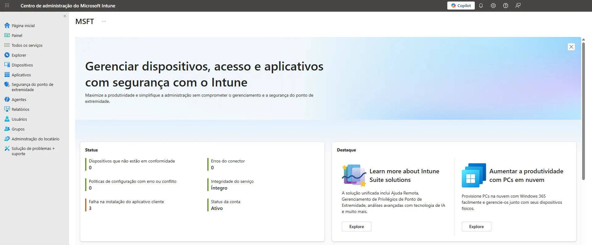
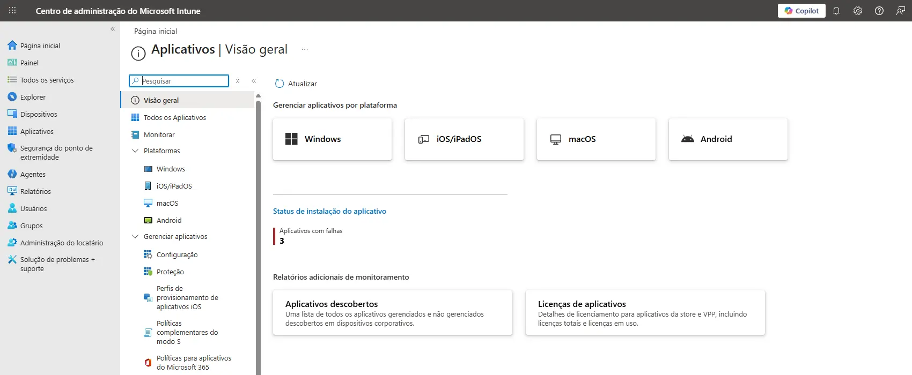
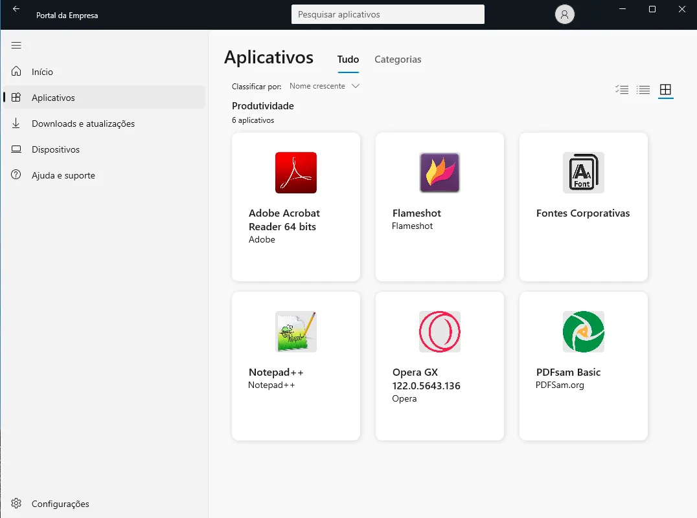
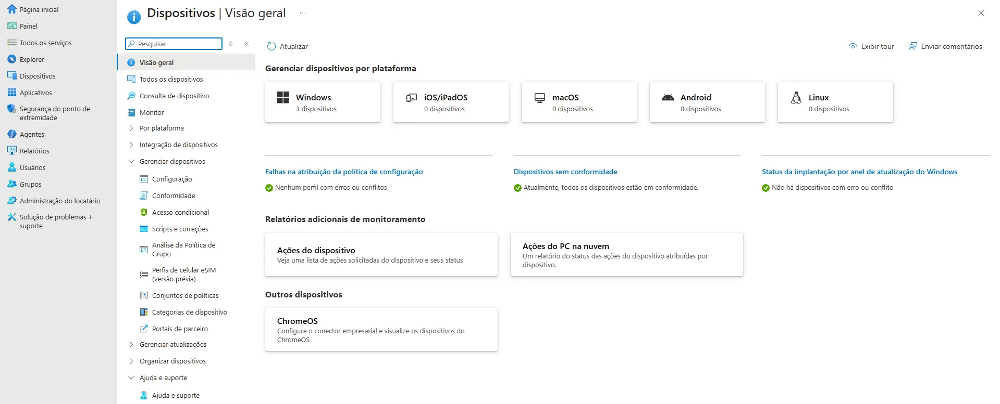

O Desafio da TI descentralizada
Embora o gerenciamento de dispositivos não seja um assunto novo, a recente aposentadoria do Microsoft Deployment Toolkit (MDT), tradicionalmente usado para implantação de sistemas operacionais e aplicativos durante a preparação de equipamentos, reforça a necessidade de buscar alternativas modernas que unifiquem implantação e gerenciamento contínuo no ambiente corporativo.
O Microsoft Intune é uma solução robusta para essas necessidades. Ele é uma solução de Gerenciamento de Endpoint baseada na nuvem que permite controlar dispositivos (computadores, celulares e tablets) e aplicativos de forma centralizada, garantindo segurança e eficiência.

Tendo em vista que o cenário atual não está mais restrito as paredes de um escritório, com funcionários utilizando notebooks em casa, acessando e-mails corporativos em celulares pessoais e conectando-se a redes Wi-Fi públicas, para donos de uma micro ou pequena empresa (MPE), isso é um pesadelo logístico: como garantir que todos os dispositivos estejam atualizados? Como instalar um software novo em dez máquinas diferentes sem precisar ir até cada uma delas? E o mais importante: como impedir que um notebook perdido se torne uma porta aberta para os dados da empresa?
O que é o Microsoft Intune e por que ele é relevante?
O Microsoft Intune é parte da suíte de gerenciamento de Endpoint da Microsoft. Diferente dos métodos antigos, que exigiam servidores caros e complexos dentro da empresa, o Intune funciona 100% na nuvem.
Para uma empresa de pequeno porte, ele é relevante porque elimina a necessidade de um "departamento de TI gigante". Ele permite que um único profissional (ou um parceiro técnico) configure políticas de segurança que se aplicam automaticamente a todos os dispositivos, não importa onde eles estejam.
Instalação automatizada de aplicativos: Adeus ao "Próximo, Próximo, Concluir"
Um dos maiores ganhos de produtividade com o Intune é o Gerenciamento de Aplicativos (MAM):

Imagine que sua empresa contratou novos colaboradores. No modelo tradicional, alguém precisaria "baixar" os instaladores do navegador, do antivírus, do leitor de PDF e entre outros softwares utilizados no ambiente em cada equipamento manualmente (ou acessar um servidor de arquivos para tal). Com o Intune, você cria um "perfil" de aplicativos dessa forma, quando o colaborador faz login no Windows com sua conta corporativa:
- • O sistema identifica quem ele é.
- • Inicia o download silencioso dos softwares autorizados de acordo com o "perfil".
- • Instala as ferramentas sem que o usuário precise clicar em nada.
Isso garante que todos utilizem as mesmas versões dos sistemas, evitando incompatibilidades e vulnerabilidades de softwares desatualizados.
Portal da Empresa: o ponto central para aplicativos e suporte ao usuário
Além da automatização na instalação de softwares, o Portal da Empresa (Company Portal) é outro recurso do Intune que facilita muito o dia a dia das micro e pequenas empresas. Ele funciona como uma "loja corporativa" onde o colaborador encontra tudo o que precisa de forma simples e segura, permitindo:
- Instalar aplicativos autorizados pela empresa com apenas um clique.
- Visualizar todos os dispositivos vinculados à sua conta, como notebook e smartphone.
- Solicitar suporte de TI usando informações de contato fornecidas pela própria empresa.
- Registrar o dispositivo no Intune, quando exigido pelas políticas de segurança.

Para quem gerencia TI, isso reduz drasticamente mensagens como "onde baixo o aplicativo X?" ou "pode instalar o sistema Y para mim?". Para o colaborador, significa autonomia e organização em um único lugar. Em ambientes híbridos e com equipes pequenas, o Portal da Empresa se torna um verdadeiro aliado, pois evita que cada instalação dependa da TI e garante que todos usem exatamente as versões autorizadas dos aplicativos, reduzindo riscos e aumentando a produtividade.
Para as MPEs, essa simplicidade significa:
- • Menos tempo de suporte técnico.
- • Padronização total das instalações.
- • Garantia de que somente apps autorizados sejam utilizados.
- • Experiência profissional mesmo com equipes pequenas.
Gerenciamento completo de Hardware e Software
O Intune oferece uma visão de "raio-x" do seu parque tecnológico:

- • Inventário de Hardware: você sabe exatamente quantos notebooks a empresa possui, o número de série, a capacidade de memória e o estado da bateria. Se um computador quebrar, você tem todos os dados técnicos em mãos para o suporte.
- • Inventário de Software: o Intune lista todos os programas instalados em cada máquina. Isso é vital para identificar softwares piratas ou "shadow IT" (aplicativos instalados por funcionários sem autorização que podem gerar riscos).
- • Monitoramento de Saúde: é possível verificar se o disco rígido está cheio ou se o Windows Update está falhando antes mesmo de o funcionário perceber o problema.
Intune Plan 1: a solução inteligente para redução de custos
Muitas empresas acreditam que, para ter o Intune, precisam obrigatoriamente migrar todo o seu ecossistema para a Microsoft. Isso é um mito. O Microsoft Intune Plan 1 pode ser contratado de forma avulsa (standalone), sendo uma excelente escolha para empresas que:
- Utilizam ferramentas open source: empresas que optam pelo LibreOffice em vez do Microsoft Office para economizar em licenças.
- Usam Google Workspace: empresas que já utilizam o Gmail corporativo e o Google Drive pela agilidade e colaboração que oferecem, mas quando o assunto é gerenciamento de dispositivos Windows, o Google apresenta limitações.
É nesse ponto que o Microsoft Intune se destaca: ele traz robustez e controle sobre dispositivos variados (Windows, macOS, Android e iOS). Assim, cria-se uma integração inteligente onde o Google Workspace cuida da colaboração e identidade dos usuários e o Intune complementa com a proteção e controle dos equipamentos.
Contratando apenas o Plan 1 (custo aproximado entre R$ 45,00 e R$ 60,00 por usuário/mês), a empresa obtém todo o poder de gestão e segurança da Microsoft, sem precisar pagar novamente por e-mails ou editores de texto que já possui em outras plataformas.
Quadro Comparativo: Qual o melhor caminho para sua empresa?
Para melhor compreensão, segue abaixo um quadro comparativo com três cenários que podem ser comuns para micro e pequenas empresas:
🔗 Para saber mais sobre os valores de licença acesse:
Compliance e Segurança: o padrão ouro da proteção
O Microsoft Intune não apenas gerencia, ele protege. Ele vem com requisitos de segurança padrão que ajudam as empresas a estarem em conformidade com leis como a LGPD:
- Criptografia BitLocker: com um clique, você obriga que todos os notebooks da empresa tenham o disco rígido criptografado. Se o notebook for roubado ou perdido, ninguém conseguirá ler os arquivos sem a chave.
- Políticas de senha: você pode exigir que todos os dispositivos tenham senhas complexas e bloqueio automático após 5 minutos de inatividade.
- Limpeza remota (Wipe): se um funcionário for desligado ou perder o celular corporativo, o administrador pode apagar todos os dados da empresa remotamente, mantendo os arquivos pessoais do colaborador intactos (em casos de dispositivos pessoais).
- Acesso condicional: o sistema impede que um dispositivo acesse os arquivos da empresa se ele não estiver com o antivírus em dia ou com as atualizações de segurança aplicadas.
O impacto prático no negócio
Para um gestor, o Intune significa previsibilidade e redução de riscos:
- Redução de custo: menos tempo gasto com suporte técnico manual.
- Continuidade: se um equipamento apresentar defeito, basta substitui-lo, logar na conta e em poucos minutos o ambiente de trabalho (mesmo com ferramentas open source) é baixado/instalado automaticamente.
- Proteção jurídica: em caso de fiscalização da LGPD, a empresa pode provar que possui controle sobre os dados e criptografia ativa em todos os dispositivos.
O próximo passo
Seja através do pacote completo Business Premium ou da licença econômica Plan 1 para acompanhar seu ecossistema atual, o Microsoft Intune é uma ferramenta de sobrevivência digital. Ele permite que o gestor pare de "apagar incêndios" técnicos e foque no que realmente importa: o crescimento do negócio.